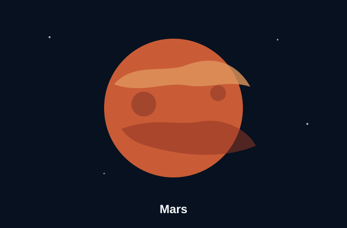

The red planet
Mars is the fourth planet from the Sun. It is known for its reddish color, thin atmosphere, polar ice, extinct volcanoes, canyons, dust, and changing weather. These features make Mars one of the most studied planets besides Earth. NASA Mars Facts
Mars is especially interesting because spacecraft can land there and directly study rocks, soil, and the atmosphere. Rovers give scientists a ground-level view, which is different from only seeing a planet through a telescope.
Why scientists study Mars
Studying Mars helps scientists compare planets. Mars has mountains, valleys, dust storms, and evidence that liquid water shaped parts of its past. By studying Mars, scientists can better understand how planets change over time and what conditions might support life.